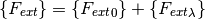
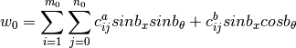
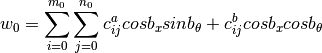
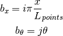

Semi-analytical Models for Cones and Cylinder (compmech.conecyl)¶
The ConeCyl class embodies all the methods and functions necessary to perform:
- linear static analysis
- linear buckling analysis
- non-linear static analysis
in conical and cylindrical structures.
The implementation focused on laminate composite shells with a constant
laminate constitutive relation. This means that the semi-analtical
models were derived doing an integration using a constant ![[F]](../../_images/math/701ee538464334ab7f699b9029ec7b4da7d3fafd.png) for the whole
domain. Recalling that correlates the strains and the distributed
stresses by the relation:
for the whole
domain. Recalling that correlates the strains and the distributed
stresses by the relation:
![\{N\} = [F] \{\varepsilon\}](../../_images/math/9ac01021a78866179d9f0ca3e9a1fb7143c8a6a3.png)
The ConeCyl object¶
- class compmech.conecyl.ConeCyl¶
Methods
SPLA(PLs[, NLgeom, plot]) Runs the Single Perturbation Load Approach (SPLA) add_SPL(PL[, pt, theta]) Add a Single Perturbation Load 
add_force(x, theta, fx, ftheta, fz) Add a punctual force apply_shim(thetadeg, width, thick[, ncpts]) Distributes the axial load in order to simulate a shim calc_fext([inc, kuk, silent]) Calculates the external force vector 
calc_fint(c[, inc, m, return_u]) Calculates the internal force vector 
calc_full_c(cu[, inc]) Returns the full set of Ritz constants eigen([c, tol, combined_load_case, kL, kG]) Performs a non-linear eigenvalue analysis at a given state exclude_dofs_matrix(k[, return_kkk, ...]) Makes the partition of the dofs for prescribed displacements fit_Nxxtop(ts, us[, update_Nxxtop]) Adjusts the axial load distribution for a desired top edge from_DB(name) Load cone / cylinder data from the local database get_size() Calculates the size of the stiffness matrices lb([c, tol, combined_load_case]) Performs a linear buckling analysis plot(c[, invert_x, plot_type, vec, ...]) Contour plot for a Ritz constants vector. plotAbaqus(frame, fieldOutputKey, vec, ...) Print a field output for a cylinder/cone model from Abaqus save() Save the ConeCyl object using cPickle static([NLgeom, silent]) Static analysis for cones and cylinders strain(c[, xs, ts, gridx, gridt, inc]) Calculates the strain field stress(c[, xs, ts, gridx, gridt, inc]) Calculates the stress field uvw(c[, xs, ts, gridx, gridt, inc]) Calculates the displacement field - SPLA(PLs, NLgeom=True, plot=False)¶
Runs the Single Perturbation Load Approach (SPLA)
A set of non-linear results will be
Parameters: PLs: list :
The perturbation loads used to build the knock-down curve. It must be a list of float values.
NLgeom : bool, optional
Flag passed to the static() method that tells whether a geometrically non-linear analysis is to be performed.
Returns: curves : list
The sequence of curves, one curve for each perturbation load given in the input parameter PLs. Each curve in the list is a dict object with the keys:
key description 'wall_time_s' The wall time for the non-linear analysis 'name' The name of the curve. Ex: 'PL = 1. N' 'cs' A list with a vector of Ritz constants for each load increment needed 'increments' A list with the values of increments needed 'wPLs' A list with the normal displacement at the perturbation load application point for each load increment 'uTMs' A list containing the axial displacement for each load increment 'Fcs' A list containing the axial reaction force for each load increment Notes
The curves are stores in the ConeCyl parameter outputs['SPLA_curves'].
- add_SPL(PL, pt=0.5, theta=0.0)¶
Add a Single Perturbation Load
Adds a perturbation load to the ConeCyl object, the perturbation load is a particular case of the punctual load with only a normal component.
Parameters: PL : float
The perturbation load value.
pt : float
The normalized position along the
 axis in which the new SPL
will be included.
axis in which the new SPL
will be included.theta : float
The angular position in radians of the new SPL.
Notes
Each single perturbation load is added to the forces parameter of the ConeCyl object, which may be changed by the analyst at any time.
- add_force(x, theta, fx, ftheta, fz)¶
Add a punctual force
Adds a force vector
 to the forces
parameter of the ConeCyl object.
to the forces
parameter of the ConeCyl object.Parameters: x : float
The
position.theta : float
The
 position in radians.
position in radians.fx : float
The
component of the force vector.ftheta : float
The
component of the force vector.fz : float
The
 component of the force vector.
component of the force vector.
- apply_shim(thetadeg, width, thick, ncpts=10000)¶
Distributes the axial load in order to simulate a shim
The axial load distribution
 will be adjusted such
that the resulting displacement
will be adjusted such
that the resulting displacement  at
at  (top edge) will look
similar to a case where a shim is applied.
(top edge) will look
similar to a case where a shim is applied.Parameters: thetadeg : float
Position in degrees of the center of the shim.
width : float
Circumferential width of the shim.
thick : float
Thickness of the shim.
ncpts : int, optional
Number of control points used in the least-squares routine.
Returns: ts : np.ndarray
Positions
of the control points.us : np.ndarray
Displacements
of the control points.Notes
This function changes the Nxxtop parameter of the current ConeCyl object. Returning ts and us is useful for post processing purposes only.
Examples
>>> ts, us = cc.apply_shim(0., 25.4, 0.1)
- calc_fext(inc=None, kuk=None, silent=False)¶
Calculates the external force vector
Recall that:

such that the terms in
 are constant and the terms in
are constant and the terms in
 will be scaled by the parameter inc.
will be scaled by the parameter inc.Parameters: inc : float, optional
Since this function is called during the non-linear analysis, inc will multiply the terms
.kuk : np.ndarray, optional
Obsolete, created for displacement controlled analyses, but the implementation has not been finished, see exclude_dofs_matrix().
silent : bool, optional
A boolean to tell whether the msg messages should be printed.
Returns: fext : np.ndarray
The external force vector
- calc_fint(c, inc=1.0, m=1, return_u=True)¶
Calculates the internal force vector
Parameters: c : np.ndarray
The Ritz constants that will be used to compute the internal forces.
inc : float, optional
Load increment, necessary to calculate the full set of Ritz constants using calc_full_c().
m : integer, optional
A multiplier to be applied to nx and nt, if one whishes to use more integration points.
return_u : bool, optional
If the internal force vector corresponsing to the unknown set of Ritz constants should be returned.
Returns: fint : np.ndarray
The internal force vector.
- calc_full_c(cu, inc=1.0)¶
Returns the full set of Ritz constants
When prescribed displacements take place the matrices and the Ritz constants are partitioned like:
k = | kkk kku | | kuk kuu |and the corresponding Ritz constants:
c = | ck | | cu |This function adds the set of known Ritz constants (ck) to the set of unknown (cu) based on the prescribed displacements.
Parameters: cu : np.ndarray
The set of unknown Ritz constants
inc : float, optional
Load increment, necessary to calculate the full set of Ritz constants using calc_full_c().
Returns: c : np.ndarray
The full set of Ritz constants.
- eigen(c=None, tol=0, combined_load_case=None, kL=None, kG=None)¶
Performs a non-linear eigenvalue analysis at a given state
The following parameters of the ConeCyl object will affect he non-linear eigenvalue analysis:
parameter description num_eigenvalues Number of eigenvalues to be extracted num_eigvalues_print Number of eigenvalues to print after the analysis is completed Additionally, the non-linear analysis parameters described in static() will affect the integration of the non-linear matrices kL and kG if they are not given as input parameters.
Parameters: combined_load_case : int, optional
It tells whether the linear buckling analysis must be computed considering combined load cases, each value will tell the algorithm to rearrange the linear matrices in a different way. The valid values are 1, or 2, where:
- 1 : find the critical axial load for a fixed torsion load
- 2 : find the critical axial load for a fixed pressure load
- 3 : find the critical torsion load for a fixed axial load
Notes
The extracted eigenvalues are stored in the eigvals parameter of the ConeCyl object and the
 eigenvector in the
eigvecs[i-1, :] parameter.
eigenvector in the
eigvecs[i-1, :] parameter.
- exclude_dofs_matrix(k, return_kkk=False, return_kku=False, return_kuk=False)¶
Makes the partition of the dofs for prescribed displacements
Makes the following partition of a given matrix:
k = | kkk kku | | kuk kuu |Parameters: k : scipy.sparse.coo_matrix
Matrix to be partitioned.
return_kkk : bool, optional
If the region
 must be returned.
must be returned.return_kku : bool, optional
If the region
 must be returned.
must be returned.return_kuk : bool, optional
If the region
 must be returned.
must be returned.Returns: out : dict
A dict object containing the keys for the corresponding sub-matrices kkk, kku, kuk, kuu. The sub-matrix out['kuu'] is a scipy.sparse.csr_matrix, while the others are 2-D np.ndarray objects.
- fit_Nxxtop(ts, us, update_Nxxtop=True)¶
Adjusts the axial load distribution for a desired top edge displacement
Parameters: ts : np.ndarray
Corrdinates
of each control point.us : np.ndarray
Desired displacement
for each control point.update_Nxxtop : bool, optional
Tells whether self.Nxxtop should be updated.
Returns: Nxxtop : np.ndarray
The coefficients for the
function.
- from_DB(name)¶
Load cone / cylinder data from the local database
Parameters: name : str
A key contained in the ccs dictionary of module compmech.conecyl.conecylDB.
- get_size()¶
Calculates the size of the stiffness matrices
The size of the stiffness matrices can be interpreted as the number of rows or columns, recalling that this will be the size of the Ritz constants’ vector
 , the internal force vector and
the external force vector .
, the internal force vector and
the external force vector .Returns: size : int
The size of the stiffness matrices.
- lb(c=None, tol=0, combined_load_case=None)¶
Performs a linear buckling analysis
The following parameters of the ConeCyl object will affect the linear buckling analysis:
parameter description num_eigenvalues Number of eigenvalues to be extracted num_eigvalues_print Number of eigenvalues to print after the analysis is completed Parameters: combined_load_case : int, optional
It tells whether the linear buckling analysis must be computed considering combined load cases, each value will tell the algorithm to rearrange the linear matrices in a different way. The valid values are 1, or 2, where:
- 1 : find the critical axial load for a fixed torsion load
- 2 : find the critical axial load for a fixed pressure load
- 3 : find the critical torsion load for a fixed axial load
Notes
The extracted eigenvalues are stored in the eigvals parameter of the ConeCyl object and the
eigenvector in the
eigvecs[i-1, :] parameter.
- plot(c, invert_x=False, plot_type=1, vec='w', deform_u=False, deform_u_sf=100.0, filename='', ax=None, figsize=(3.5, 2.0), save=True, add_title=True, title='', colorbar=False, cbar_nticks=2, cbar_format=None, cbar_title='', cbar_fontsize=10, aspect='equal', clean=True, dpi=400, texts=, []xs=None, ts=None, gridx=300, gridt=300, num_levels=400, inc=1.0)¶
Contour plot for a Ritz constants vector.
Parameters: c : np.ndarray
The Ritz constants that will be used to compute the field contour.
vec : str, optional
Can be one of the components:
- Displacement: 'u', 'v', 'w', 'phix', 'phit',
'magnitude'
Strain: 'exx', 'ett', 'gxt', 'kxx', 'ktt', 'kxt', 'gtz', 'gxz'
Stress: 'Nxx', 'Ntt', 'Nxt', 'Mxx', 'Mtt', 'Mxt', 'Qt', 'Qx'
deform_u : bool, optional
If True the contour plot will look deformed.
deform_u_sf : float, optional
The scaling factor used to deform the contour.
invert_x : bool, optional
Inverts the
axis of the plot. It may be used to match
the coordinate system of the finite element models created
using the desicos.abaqus module.plot_type : int, optional
For cylinders only 4 and 5 are valid. For cones all the following types can be used:
- 1: concave up (with invert_x=False) (default)
- 2: concave down (with invert_x=False)
- 3: stretched closed
- 4: stretched opened (
 vs.
vs.  )
) - 5: stretched opened ( vs. )
save : bool, optional
Flag telling whether the contour should be saved to an image file.
dpi : int, optional
Resolution of the saved file in dots per inch.
filename : str, optional
The file name for the generated image file. If no value is given, the
 parameter of the ConeCyl object will be used.
parameter of the ConeCyl object will be used.ax : AxesSubplot, optional
When ax is given, the contour plot will be created inside it.
figsize : tuple, optional
The figure size given by (width, height).
add_title : bool, optional
If a title should be added to the figure.
title : str, optional
If any string is given add_title will be ignored and the given title added to the contour plot.
colorbar : bool, optional
If a colorbar should be added to the contour plot.
cbar_nticks : int, optional
Number of ticks added to the colorbar.
cbar_format : [ None | format string | Formatter object ], optional
See the matplotlib.pyplot.colorbar documentation.
cbar_fontsize : int, optional
Fontsize of the colorbar labels.
cbar_title : str, optional
Colorbar title. If cbar_title == '' no title is added.
aspect : str, optional
String that will be passed to the AxesSubplot.set_aspect() method.
clean : bool, optional
Clean axes ticks, grids, spines etc.
xs : np.ndarray, optional
The
positions where to calculate the displacement field.
Default is None and the method _default_field is used.ts : np.ndarray, optional
The theta positions where to calculate the displacement field. Default is None and the method _default_field is used.
gridx : int, optional
Number of points along the
axis where to calculate the
displacement field.gridt : int, optional
Number of points along the
 where to calculate the
displacement field.
where to calculate the
displacement field.num_levels : int, optional
Number of contour levels (higher values make the contour smoother).
inc : float, optional
Load increment, necessary to calculate the full set of Ritz constants using calc_full_c().
Returns: ax : matplotlib.axes.Axes
The Matplotlib object that can be used to modify the current plot if needed.
- plotAbaqus(frame, fieldOutputKey, vec, nodes, numel_cir, elem_type='S4R', ignore=, []ax=None, figsize=(3.3, 3.3), save=True, aspect='equal', clean=True, plot_type=1, outpath='', filename='', npzname='', pyname='', num_levels=400)¶
Print a field output for a cylinder/cone model from Abaqus
This function is intended to be used with models created by the DESICOS plug-in for Abaqus, where a mapped mesh is used and the models comparable to the models of compmech.conecyl.
The frame and nodes input types are described in Abaqus Scripting Reference Manual and they can be obtained through:
>>> frame = session.odbs['odb_name.odb'].steps['step_name'].frames[0] >>> nodes = mdb.models['model_name'].parts['part_name'].nodes
Parameters: frame : OdbFrame
The frame from where the field output will be taken from.
fieldOutputKey : str
The field output key to be used. It must be available in frame.fieldOutputs.keys(). This function was tested with 'UT' and 'U' only.
vec : str
The displacement vector to be plotted: 'u', 'v' or 'w'.
nodes : MeshNodeArray
The part nodes.
numel_cir : int
The number of elements around the circumference.
elem_type : str, optional
The element type. The elements 'S4R', 'S4R5' where tested.
ignore : list, optional
A list with the node ids to be ignored. It must contain any nodes outside the mapped mesh included in parts['part_name'].nodes.
ax : AxesSubplot, optional
When ax is given, the contour plot will be created inside it.
figsize : tuple, optional
The figure size given by (width, height).
save : bool, optional
Flag telling whether the contour should be saved to an image file.
aspect : str, optional
String that will be passed to the AxesSubplot.set_aspect() method.
clean : bool, optional
Clean axes ticks, grids, spines etc.
plot_type : int, optional
See plot().
outpath : str, optional
Output path where the data from Abaqus and the plots are saved (see notes).
filename : str, optional
The file name for the generated image file.
npzname : str, optional
The file name for the generated npz file.
pyname : str, optional
The file name for the generated Python file.
num_levels : int, optional
Number of contour levels (higher values make the contour smoother).
Returns: out : tuple
Where out[0] and out[1] contain the circumferential and meridional grids of coordinates and out[2] the corresponding field output.
Notes
The data is saved using np.savez() into outpath as abaqus_output.npz with an accompanying script for plotting abaqus_output_plot.py, very handy when Matplotlib is not importable from Abaqus.
- save()¶
Save the ConeCyl object using cPickle
Notes
The pickled file will have the name stored in ConeCyl.name followed by a '.ConeCyl' extension.
- static(NLgeom=False, silent=False)¶
Static analysis for cones and cylinders
The analysis can be linear or non-linear. In case of a non-linear analysis the following parameters of the ConeCyl object will affect the non-linear analysis:
non-linear algorithm description NL_method 'NR' for the Newton-Raphson 'arc_length' for the Arc-Length method line_search activate line-search (for Newton-Raphson methods only) max_iter_line_search maximum number of iterations for the line-search modified_NR activate the modified Newton-Raphson compute_every_n if modified_NR=True, the non-linear matrices will be updated at every  iterations
iterationsconvergence criteria description absTOL the convergence is achieved when the maximum residual force is smaller than this value maxNumIter maximum number of iteration; if achieved the load increment is bisected numerical integration description ni_num_cores number of cores used for the numerical integration ni_method 'trapz2d' for 2-D Trapezoidal’s 'simps2d' for 2-D Simpsons’ integration Parameters: NLgeom : bool
Flag to indicate whether a linear or a non-linear analysis is to be performed.
silent : bool, optional
A boolean to tell whether the msg messages should be printed.
Returns: cs : list
A list containing the Ritz constants for each load increment of the static analysis. The list will have only one entry in case of a linear analysis.
Notes
The returned cs is stored in the cs parameter of the ConeCyl object. The actual increments used in the non-linear analysis are stored in the increments parameter.
- strain(c, xs=None, ts=None, gridx=300, gridt=300, inc=1.0)¶
Calculates the strain field
Parameters: c : np.ndarray
The Ritz constants vector to be used for the strain field calculation.
xs : np.ndarray, optional
The
coordinates where to calculate the strains.ts : np.ndarray, optional
The
coordinates where to calculate the strains, must
have the same shape as xs.gridx : int, optional
When xs and ts are not supplied, gridx and gridt are used.
gridt : int, optional
When xs and ts are not supplied, gridx and gridt are used.
inc : float, optional
Load increment, necessary to calculate the full set of Ritz constants using calc_full_c().
- stress(c, xs=None, ts=None, gridx=300, gridt=300, inc=1.0)¶
Calculates the stress field
Parameters: c : np.ndarray
The Ritz constants vector to be used for the strain field calculation.
xs : np.ndarray, optional
The
coordinates where to calculate the strains.ts : np.ndarray, optional
The
coordinates where to calculate the strains, must
have the same shape as xs.gridx : int, optional
When xs and ts are not supplied, gridx and gridt are used.
gridt : int, optional
When xs and ts are not supplied, gridx and gridt are used.
inc : float, optional
Load increment, necessary to calculate the full set of Ritz constants using calc_full_c().
- uvw(c, xs=None, ts=None, gridx=300, gridt=300, inc=1.0)¶
Calculates the displacement field
For a given full set of Ritz constants c, the displacement field is calculated and stored in the parameters u, v, w, phix, phit of the ConeCyl object.
Parameters: c : float
The full set of Ritz constants
xs : np.ndarray
The
positions where to calculate the displacement field.
Default is None and the method _default_field is used.ts : np.ndarray
The theta positions where to calculate the displacement field. Default is None and the method _default_field is used.
gridx : int
Number of points along the
axis where to calculate the
displacement field.gridt : int
Number of points along the
where to calculate the
displacement field.inc : float, optional
Load increment, necessary to calculate the full set of Ritz constants using calc_full_c().
Returns: out : tuple
A tuple of np.ndarrays containing (u, v, w, phix, phit).
Notes
The returned values u`, v, w, phix, phit are stored as parameters with the same name in the ConeCyl object.
Non-linear analysis (compmech.conecyl.non_linear)¶
Non-linear algorithms used with the ConeCyl object.
- compmech.conecyl.non_linear.NR(cc)[source]¶
Newton-Raphson algorithm for non-linear analysis.
Parameters: cc : compmech.conecyl.ConeCyl
The ConeCyl object.
Cone / Cylinder Database (compmech.conecyl.conecylDB)¶
This database is a group of three dictionaries defines as following:
- laminaprops: the material properties for an orthotropic lamina
- allowables: the allowables for an orthotropic lamina
- ccs: the geometric, stacking sequence and material data for a conical / cylindrical structure
One could import these dictionaries doing:
from compmech.conecyl.conecylDB import laminaprops, allowables, ccs
Models’ Database (compmech.conecyl.modelDB)¶
Used to configure the main parameters for each implemented model.
- compmech.conecyl.modelDB.get_linear_matrices(cc, combined_load_case=None)[source]¶
Obtain the right functions to calculate hte linear matrices for a given model.
The model parameter of the ConeCyl object is used to search for the functions fG0, fG0_cyl, fkG0, fkG0_cyl, and the matrix k0edges is calculated, when applicable.
Parameters: cc : compmech.conecyl.ConeCyl
The ConeCyl object.
combined_load_case : int, optional
As explained in the ConeCyl.lb() method, the integer indicating which combined load case should be used. Default is None.
Returns: out : tuple
A tuple containing (fk0, fk0_cyl, fkG0, fkG0_cyl, k0edges).
Imperfections (compmech.conecyl.imperfections)¶
Convenient routines to transform discrete measured data into continuous functions applicable in semi-analytical analyses.
The implemented geometric imperfection of this module is the one representing the normal displacement of the mid-surface and will be called Measured Geometric Imperfection (MGI).
The non-linear analysis using a MGI require the calculation
of the initial imperfection field, called  , and the corresponding
partial derivatives
, and the corresponding
partial derivatives  and
and  .
.
The function calc_c0 described below is implemented to find the best-fit for a given imperfection data. Three different approximation functions can be selected using the funcnum parameter.
The imperfection file should be in the form:
theta1 height1 imp1
theta2 height2 imp2
...
thetan heightn impn
where height is measured from the bottom to the top of the cylinder
or cone, parallel to the axial axis, and theta is the circumferential
coordinate measured as shown
in the semi-analytical model.
When implementing a non-linear analysis algorithm, see for example fsdt_donnell_bc1_nonlinear.pyx , the functions to calculate the partial derivatives of the geometric imperfection are accessible using Cython
from compmech.conecyl.imperfection.mgi cimport cfw0x, cfw0t
The cfw0x and cfw0t function headers are:
cdef void cfw0x(double x, double t, double *c0, double L,
int m, int n, double *w0xref, int funcnum) nogil
cdef void cfw0t(double x, double t, double *c0, double L,
int m, int n, double *w0tref, int funcnum) nogil
where c0 is the array containing the coefficients of the approximation
function, L is the meridional length of the cone or cylinder
(as shown here), x and t the and
coordinates, m and n the number of terms of the
approximation series as described above, and finally,
w0xref and w0tref are pointers to double variables.
- compmech.conecyl.imperfections.imperfections.calc_c0(path, m0=40, n0=40, funcnum=2, sample_size=None, maxmem=8, save=True, offset_w0=None)[source]¶
Find the coefficients
 that best fit the function.
that best fit the function.The measured data will be fit using one of the following functions, selected using the funcnum parameter:
funcnum=1

funcnum=2 (default)

funcnum=3

where:

where
 represents the difference between the maximum and
the height values in the imperfection file divided by the cosine
of the semi-vertex angle:
represents the difference between the maximum and
the height values in the imperfection file divided by the cosine
of the semi-vertex angle:
In this form
 will vary from
will vary from  (at the top)
to
(at the top)
to  (at the bottom).
(at the bottom).Note
Note that if the measured sample does not cover all the height, it will be stretched.
The approximation can be written in matrix form as:
![w_0 = [g] \{c\}](../../_images/math/d947cffc16ab48694b349b4260deee0668081dc7.png)
where
![[g]](../../_images/math/e5c181ab30f23cea7c86c455ea6ebc26edff132c.png) carries the base functions and
carries the base functions and  the respective
amplitudes. The solution consists on finding the best that minimizes
the least-square error between the measured imperfection pattern and the
function.
the respective
amplitudes. The solution consists on finding the best that minimizes
the least-square error between the measured imperfection pattern and the
function.Parameters: path : str or numpy.ndarray
The path of the file containing the data. Can be a full path using r"C:\Temp\inputfile.txt", for example. The input file must have 3 columns:
,  ,
,  ;
expressed in Cartesian coordinates.
;
expressed in Cartesian coordinates.This input can also be a numpy.ndarray object, with
, , in each corresponding column.m0 : int
Number of terms along the meridian (
).n0 : int
Number of terms along the circumference (
).funcnum : int, optional
As explained above, selects the base functions used for the approximation.
sample_size : int or None, optional
Specifies how many points of the imperfection file should be used. If None all points will be used in the computations.
maxmem : int, optional
Maximum RAM memory in GB allowed to compute the base functions. The scipy.interpolate.lstsq will go beyond this limit.
save : bool, optional
If True saves the calculated coefficients in the compmech/conecyl/imperfections/c0 folder.
Returns: out : numpy.ndarray
A 1-D array with the best-fit coefficients.
- compmech.conecyl.imperfections.imperfections.fw0(m0, n0, c0, xs_norm, ts, funcnum=2)[source]¶
Calculates the imperfection field
for a given input.Parameters: m0 : int
The number of terms along the meridian.
n0 : int
The number of terms along the circumference.
c0 : numpy.ndarray
The coefficients of the imperfection pattern.
xs_norm : numpy.ndarray
The meridian coordinate (
) normalized to be between 0. and
1..ts : numpy.ndarray
The angles in radians representing the circumferential coordinate (
).funcnum : int, optional
The function used for the approximation (see the calc_c0 function)
Notes
The inputs xs_norm and ts must be of the same size.
If funcnum==1 or funcnum==2 then size=2, if funcnum==3 then size=4 and the inputs must satisfy c0.shape[0] == size*m0*n0.